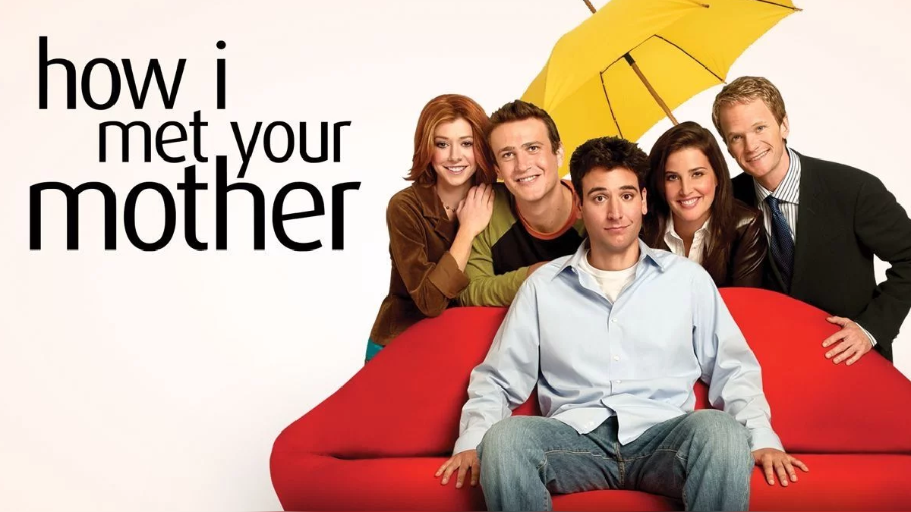
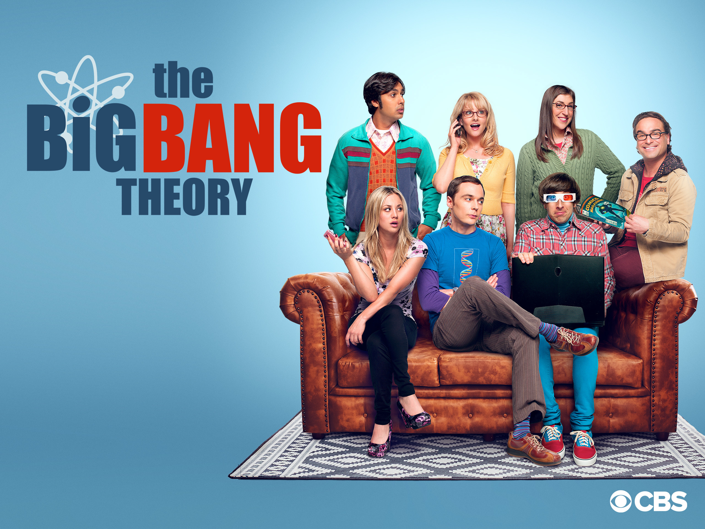

detalles de géneros
Géneros de películas
- acción
- ciencia ficción
- comedia
- romance
- superhéroe
- drama
- terror
El llamado cine de acción es un género cinematográfico donde prima la espectacularidad de las imágenes por medio de efectos especiales de estilo "clásico". La denominación es más un convencionalismo popular, que un género cinematográfico puro acuñado por críticos, estudiosos o cineastas. Rapidos y furiosos es un ejemplo perfecto para este caso.


La ciencia ficción es un género narrativo que sitúa la acción en unas coordenadas espacio-temporales imaginarias y diferentes a las nuestras, y que especula racionalmente sobre posibles avances científicos o sociales y su impacto en la sociedad. Uno de los ejemplos mas conocidos, es la legendaria saga de star wars, creada por george lucas.


La comedia es un género dramático que busca entretener y hacer reír a su público y para eso apela a recursos como el sarcasmo, la parodia, la ironía o la confusión.


Las películas de romance o románticas son aquellas, como su propio nombre ya indica, que relatan una historia de amor. Normalmente los protagonistas son una pareja y su relación el centro del argumento. Las hay con finales felices y también finales tristes.

Una película de superhéroes es una película que se centra en las acciones de individuos que generalmente poseen habilidades extraordinarias, generalmente sobrehumanas, y están dedicados a proteger al público. Estas películas suelen presentar elementos de acción , aventura , fantasía o ciencia ficción , y la primera película de un personaje en particular a menudo incluye un enfoque en el origen de sus poderes especiales y su primer enfrentamiento con su supervillano o archienemigo más famoso.

el genero dramatico se centra en desarrollar el problema o problemas entre los diferentes protagonistas. Este es quizás uno de los géneros cinematográficos más amplios que existen. No predominan las aventuras o la acción, aunque pueden aparecer puntualmente, Generalmente se basan en desarrollar la interacción y caracteres humanos.

El terror es un género cinematográfico que se caracteriza por su voluntad de provocar en el espectador sensaciones de pavor, terror, miedo, disgusto, repugnancia, horror, incomodidad o preocupación. Sus argumentos frecuentemente desarrollan la súbita intrusión en un ámbito de alguna fuerza, evento o personaje de naturaleza maligna o celestial, a menudo de origen criminal o sobrenatural. En los cines de terror es donde se produce una sensación de miedo o temor sobre las distintas causas que genera un determinado personaje o actor no profesional.


géneros de series
- drama médico
- crimen
- sitcom
- sobrenatural
- superhéroe
Un drama médico es un programa de televisión o una película en la que los eventos se centran en un hospital, el personal de una ambulancia o cualquier entorno médico. La mayor parte de la programación dramática médica actual va más allá de los eventos relacionados con los trabajos de los personajes y retrata algunos aspectos de sus vidas personales. Un drama médico típico puede tener una historia en la que dos médicos se enamoran.

el genero criminal es un género cinematográfico que gira en torno a la solución de un problema o un crimen. Se centra en los esfuerzos del detective , investigador privado o detective aficionado para resolver las misteriosas circunstancias de un problema mediante pistas, investigación y deducción inteligente.


es un genero cuyos episodios se desarrollan regularmente en los mismos lugares y con los mismos personajes, y donde se suelen incluir risas grabadas o en vivo. Su duración suele ser de unos 25 minutos, aunque algunas series pueden llegar a durar 50 minutos, y se emiten en los Estados Unidos como programa embudo (que recoge audiencia) antes de la hora de máxima audiencia.
 
La ficción sobrenatural es un género de la ficción especulativa que utiliza como temas o argumentos situaciones que no podrían suceder en el mundo natural como lo conocemos, como así también las presunciones materialistas sobre este. la ficción sobrenatural incluye elementos pertenecientes a la ficción extraña,la ficción de horror, las historias de vampiros, los cuentos de fantasmas, y las historias de fantasía. Los elementos de ficción sobrenatural pueden ser encontrados en escritos de ciencia ficción.


es un genero que se centra en las acciones de individuos que generalmente poseen habilidades extraordinarias, generalmente sobrehumanas, y están dedicados a proteger al público. Estas películas suelen presentar elementos de acción , aventura , fantasía o ciencia ficción.